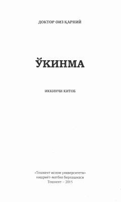

O2Qalb xotirjamligi va baxtli hayot sari ma'naviy yo'llanma.
Ushbu kitob kitobxonga xushchaqchaq va baxtli bo'lishni, hayotga o'z holicha boqishni hamda xotirjam yashashni o'rgatadi. Muallif hayotdagi qiyinchiliklarni yengib o'tish, shukrona keltirish va ma'naviy xotirjamlikka erishish yo'llarini diniy-axloqiy nuqtai nazardan yoritib beradi.